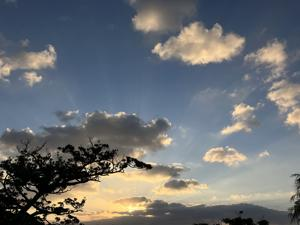

うるがいの話 ある日
最新: 8×4(エイト・フォー)の香【うるがいの話 ある日】とは 一日だけのプログです
『うるがいの話』の最新一日だけのプログで、通信料が少なく経済的だ。カニの画像をクリックすると全ての日付が載る『うるがいの話』サイトを表示します
|
|
【うるがいの話】 うるがい(ｳﾙｶﾞｲ urugai)とは、『もずくがに』の名前でとても大きくなります。 |
|---|---|
|
|
【カミマヤーの話】 猫のことを方言でマヤーといいます。カミマヤー（kamimayaa）とは、神の猫のことです。 |
|
【たながぁの音楽】 たながぁ（ﾀﾅｶﾞｰ tanagaa）とは手長えびのことで、何種類かあり大きいのは車 エビぐらいになります。 |

|
【ぶながぁの話】 ぶながぁ(ﾌﾞﾅｶﾞｰ bunagaa)とは、赤い髪の毛、赤い身体、そして身長は１ｍ２０ｃｍ ぐらい、川の蟹を食べているの目撃された。場所は沖縄県国頭郡大宜味村のと ある村僕の隣近所に住んでいる爺さんから、聞いた話です。 |
|
|
【ギーマの話】 ギーマ(giima)とは、山原の里山に咲くスズランに似た、 花を付けます。実は食べられます、 気が付くと口の周りが紫になっています。 |
2023年11月09日 (木）8×4(エイト・フォー)の香
15:07

耳コピー、諦めました。無理、ムリ、絶対むり、相対音感、全くだめ・・・。
で、ジュンク堂書店で『かぐや姫の好きだった人』の楽譜が、載っている本を
２，２００円も使って買った。楽譜ソフトに歌詞を打ち込んでいると、フと好
きだった人８×４（エイト・フォー）の香がしていた、と。フム、ネットで８
×４を検索すると
本製品の生産は２０２３／０２／２８をもって終了し、店頭在庫がなくなり次
第、販売を終了させていただきます。
長い間ご愛用いただきまして、ありがとうございました。
え、そうなんだ。店頭から無くなる前にと考えたところ
8×4って(買った事が無くうろ覚えですが)
スプレーとロールオンや、香りも種類が
(無香料含む)あると思いますが。
フムフム、いろいろ種類があるのか？・・・・。『タイミングがいいですね』
は、今日も続いてタマタマ、修理に出していたＣＤラジオを引き取りにサンエ
ー経塚シティにいた。ついでに、８×４（エイト・フォー）の製品を見つけた
匂いを嗅ぐことが出来たので、４種類試したがあの懐かしい匂いはなかった。
残念だ、あの香は永久に嗅ぐことはできないのか。
１５時０２分 ビットコインの総資産 ￥１６、０３６（↑６６１、オー！）